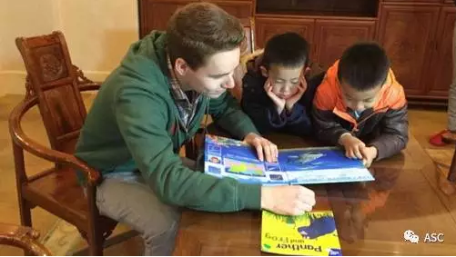
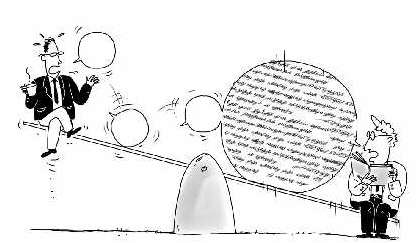
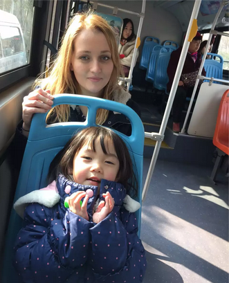
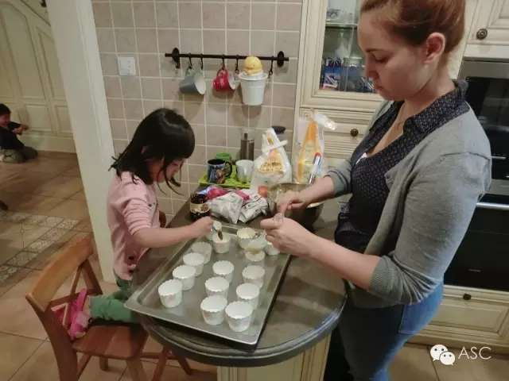
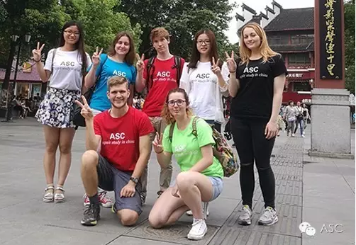
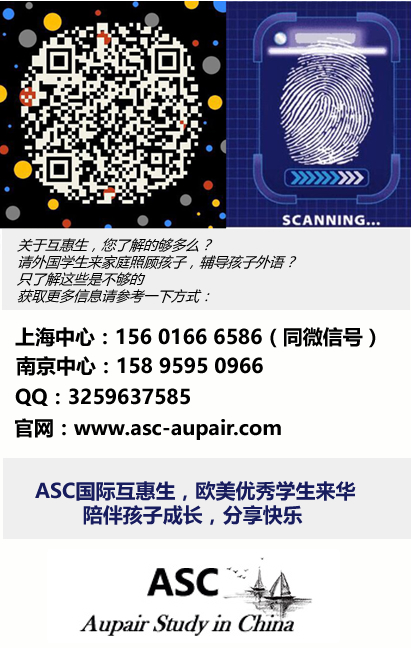

互惠动态
|
|
龙永图：送外孙女去美国，那种内在的力量是我们抗拒不了的【ASC互惠生】
龙先生曾担任国家外经贸部副部长、代表中国主持复关及入世谈判；在国人中，他算是非常懂西方的。
最近，他的外孙女儿也去美国留学了。他说：我原来一直不太同意我们送自己的孩子到美国去接受教育，但我的外孙女去年就到了美国， 那种内在的力量是我们都抗拒不了的。
龙先生从中国在世界上的地位、中国国情讲起，谈了他对中外教育的看法，很坦白，也非常难得，今天和大家分享……
正文如下：
改革开放三十多年来，中国经济有了很大发展，到2010年，我们的经济总量超过日本，成为第二大经济体。当时，全球媒体都在热议，什么时候中国经济的总量会超过美国？
这时，澳大利亚的一家报纸发表了一篇文章，说我们暂且不要讨论中国的经济总量什么时候能够超过美国，先问问另外三个 “什么时候”：
第一，什么时候全球的精英会把孩子送到中国留学，而不是像今天都把他们的孩子送到美国、 欧洲留学？
第二，什么时候全球的年轻人会最欣赏中国的电影、文化、书籍，而不是像今天他们最喜欢的是美国、欧洲的电影、书籍、音乐？
第三，什么时候全球的消费者在选择产品的时候，会首选中国的品牌？这 “三问” 确实打中了中国的要害。
特别是第一个问题，欧美教育能够吸引全球人士到他们国家学习，说明了全球精英对他们教育内在价值的认同，包括中国政府职员。
我原来一直不太同意我们送自己的孩子到美国去接受教育，但我的外孙女去年就到了美国，那种内在的力量是我们都抗拒不了的。
这 “三问” 说明，在讨论中国的经济时，一些理智的人士已经开始考虑中国以教育为核心的软实力了。而我从多年的工作生涯中也确实感到，教育的问题不仅仅关乎教育，还关乎我们整个国家的竞争力。这主要表现在两个方面：
1. 在解决经济社会发展的重大问题时 教育发挥着根本性的作用。

现在，国内经济社会发展中面临着一些重大问题：
一是经济转型问题。
问题的核心是把过去对经济增长数量的关注转移到经济发展的质量上来，而质量的问题，说到底是要整个国家形成一种以人为核心的发展目标的价值认同。过去我们说某个地方的经济质量好不好是看它的GDP；现在要看经济增长了以后， 老百姓是不是得到了真正的好处。过去提到提高城镇化就是盖房子，现在的城镇化是要提高人的生活质量。所以我们经济转型核心的问题，就是要形成以人为本的经济发展模式，这时候，专注于人的发展的教育就显得尤为重要。
我们面临的第二大的问题是创新。
不久前，美国的报纸都在讨论，为什么中国出不了乔布斯。他们认为最大的问题是中国的教育不鼓励创新，不鼓励独立自由的思维。如果教育出的孩子没有创新的能力、创新的思维，我国的创新是不可持续的，只能搞一些表面文章，一阵风就过去了；或者是只能在少数尖端的、国家投入了大量资金的领域实现少数创新，而不能实现全民创新。对此，教育承担着极大的历史性责任。
我们面临的第三个问题是建立正常的政商关系。
这看起来和教育不相关，实际上有着很深刻的关系。我们应该真正培养起一种平等的意识，让我们的孩子不再追求高高在上的做官的感觉，使孩子知道不是有钱就高人一等。
我们的孩子从小最愿意当班长、中队长、大队长，而且为了当中队长、大队长不惜让家长跟老师搞好关系，甚至采取一些不正常的办法。
而在西方发达国家，平等意识深入人心。
很多年前我到新西兰访问，新西兰的大使到机场接我，他说：“很抱歉，您再等一下，我还要接我们的副总理。” 等了一会儿，新西兰副总理自己一个人背着包，和大家一起走出通道。大使走上去迎接，副总理说：“还要麻烦你给我看着包， 我要去取行李！” 拿到大行李准备乘车，外面只有一个司机等着他。
像这样的例子不是孤立的。去年参加博鳌论坛，论坛结束后，我跟美国驻华大使说待会儿飞机上见，因为我想他肯定是和我们一起坐头等舱的。结果上了飞机，这位大使带着美国的一些大亨们，全部坐的经济舱。这就是美国，不超过规定时间你不能坐商务舱。
所以，如果教育能帮助孩子们树立民主、平等的意识，这会对解决中国的官场文化、政治文化具有非常深刻的意义。

在提高国家软实力方面，教育可以有哪些作为？
我们的软实力问题很大部分反映在我们的话语权上。我们一再抱怨中国的话语权与综合国力不相称，这正说明我们的软实力存在严重问题。
我们过去没有话语权，首先是因为我们的观念有问题。
20世纪 70 年代末、80 年代初，我在联合国工作，因为联合国的会议很多，所以即使是我们这些刚毕业没多久的年轻外交官也被分配到一些会场上，代表中国表态，表态就是话语权。当时我们都不知道怎么表态，只记住几条原则，比如其他发展中国家同意的，我们就同意，他们反对的就反对，没有自己的判断。
还有以前在各种国际会议上，凡是碰到西方发达国家提出要提高保护环境的标准，我们自然就会抵触。当时我们想，你们搞了几十年的工业化，把经济发展起来了，现在我们发展中国家刚要发展，你就提出环保标准要提高，这是陷阱，这是骗局，我们不能同意。现在想想真是荒唐。我们这几年吃了很多环境的亏，北京连续五十多天的雾霾。我们现在才知道，保护环境不是为别人，而是为了自己。
这些问题全是我们观念上的问题。过去，我们从短期的利益出发来表达观点，话语权越多，对国家的形象和名声造成的损失就越大。所以增强软实力的核心问题在于，要以怎样的观点来看待世界，看待自己。
在教育中，从小培养孩子们对世界正确的认识，才能使我们在发展中获得更多的话语权，提高自己的地位。

结合中国的基本国情，我还想在培养孩子的问题上特别强调几点：
一、是培养孩子的诚信。
不说谎是基本底线，但是我们今天的孩子没有几个不说谎的。我弟弟的孩子在美国出生，在美国受教育，他和国内同龄的孩子在一起，别人会嘲笑他是 “傻老美” ——不会见风使舵，不会说假话，傻。我们的孩子精得很，看什么人说什么话。这是谁培养的？家长培养的，教师培养的，学校大环境培养的。一个家长突然接到老板、上司的电话，他明明在公园游玩，却当着孩子的面公然说自己很忙，这才是一个电话， 以后会有十个、 二十个电话，慢慢地，你说孩子的诚信哪去了？
在国际交往中，外国人最怕我们撒谎、不诚信。我在和美国几任谈判代表谈判时，不管谈得好不好，坚守的底线是绝对不欺骗。后来我们谈判成功了，很多美国代表到中国来访问，他们都会对我说：“龙先生，你有时候很强硬，今天之所以我们还能成为朋友，是因为那么多年来你从来没骗过我们，这是我们最欣赏你的。”
去年我参加中美的一个会谈，当时基辛格就谈道：“中美两国要建立一个长久的关系，最重要的是建立互信，而建立互信的基础是你们不再骗我们。”这话讲的是很尖锐的。我们扪心自问，有的时候做得真不是很好。所以，我觉得教育就要贯穿诚信这一最基本的道理。

二、是培养责任感， 这是培养优秀社会公民最核心的问题。
中国在入世的时候，对全世界承诺遵守经济贸易规则，所以世界各国都把中国当成市场经济俱乐部的成员，开始贸易往来。但是这种关系是很脆弱的，一旦中国对这种承诺放松了，我们很可能会失去国际的信任。要使中国成为一个负责任的大国，这样在国际上才会有政治的公信力。
有一次，我到日内瓦的一个公园散步。我到公共厕所去，发现有一个八九岁的男孩在厕所里面 “玩”，我当时想小孩真调皮，怎么玩到厕所里来了。等我走出厕所，一位 40 来岁的中年妇女就着急地迎上来问：“先生，我的孩子上厕所， 进去 20分钟了还没有出来，不知道什么原因，你能不能帮我去看看？” 我进去一看，小孩正急得满头大汗，我问：“你在干什么？” 他说：“我上完厕所以后， 不知道怎么冲水。”原来冲水马桶是新式的，他没见过，为了冲水，在里面折腾了二十分钟。我帮他冲掉以后，他说了很多次谢谢。我非常感动，这就是责任心，是他所受的教育带给他的，我想，这个孩子将来一定是一个很能担当的人。

其实我们中国的小孩也可以做到这一点。我的一位同事从小就把孩子带到瑞士，这孩子就特别有责任感。有一次中国代表团到日内瓦去谈判，休息的时候到河上去划船，把孩子也带上了。有两位老兄喝完可乐以后，顺手把可乐瓶丢到身后。这个小孩看见后，一下子脸变得煞白，认为这是对环境的破坏。因为在不同的环境里成长，中国孩子也有了强烈的责任感，这都是教育的问题。
作为一个搞经济的人，我就是从以上角度来看待好的教育对中国经济持续发展和对社会长治久安的最基本意义。中国这样一个大国，竟然有那么多人离开自己的国家，那么多家庭付出了沉重的代价。所以教育问题涉及很多人， 涉及很多方面，涉及国家的未来。真正把教育放在第一位很不容易，希望更多的人去探索、去努力。

